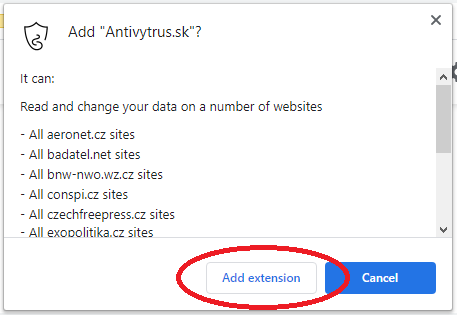
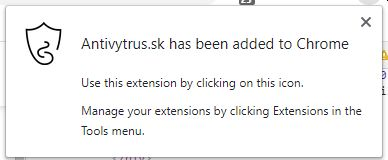
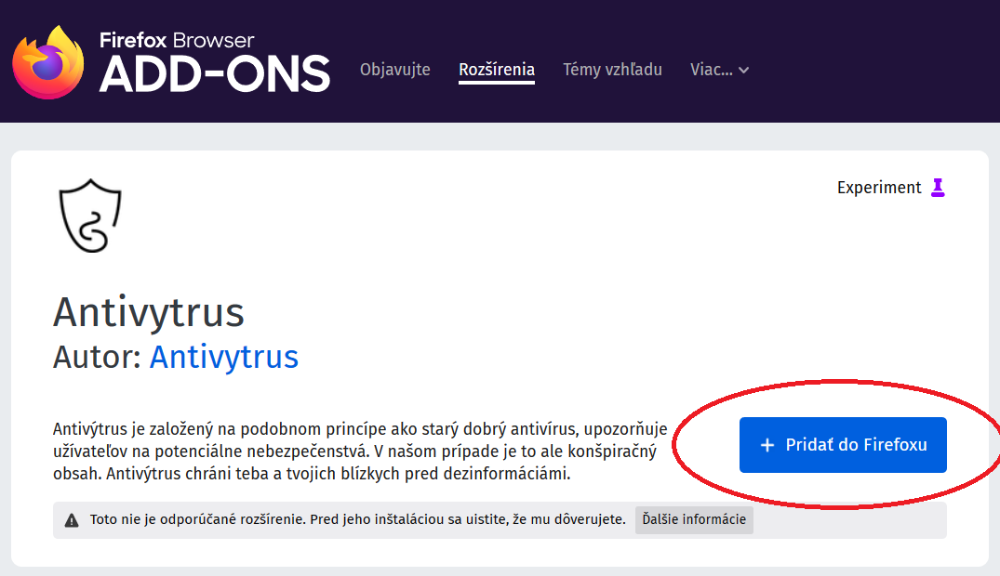
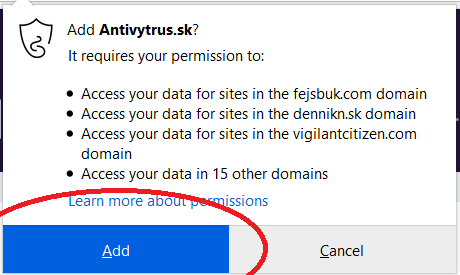
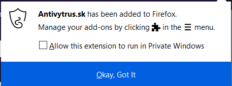

Ako nainštalovať Antivýtrus?
Jednoduchý návod ako si Antivýtrus nainštaluješ do svojho počítača alebo mobilu.
Najprv si polož otázku aký internetový prehliadač používaš?
Zatiaľ nám rozšírenie funguje iba na Google Chrome alebo Mozillu Firefox, čiže ak máš niečo iné, budeš zatiaľ musieť dezinformácie odhaľovať sám. Ak nevieš, pozri sa na ikonku. Google Chrome vyzerá takto:  a Mozilla Firefox takto: .
a Mozilla Firefox takto: .
Ak používaš Firefox, prescolluj sa nižšie alebo klikni sem. Ak máš Chrome, pokračuj tým, že si otvoríš tento odkaz.
Vpravo hore uvidíš tlačítko s nápisom "Add to Chrome". Neváhaj ani sekundu a klikni naň. Ak ho nevieš nájsť, pomôže ti nasledujúci obrázok:
Pravdepodobne na teba vyskočí upozornenie. To je v poriadku, jedná sa len o to, že čítame dáta z webových stránok zo zoznamu. Podľa toho vieme, ktorá stránka obsahuje dezinformácie a vďaka tomu ťa pred nimi môžeme ochrániť. Upozornenie vyzerá približne takto: 
A keď ho odklikneš, zobrazí sa informácia o úspešnom nainštalovaní: 
Vualá, hotovo. Ani to nebolelo, však? Teraz ťa už Antivýtrus chráni pred dezinformáciami na internete.
Ak používaš Mozillu Firefox, otvor si tento odkaz.
Začneme jednoducho. Tvojou prvou úlohou bude kliknúť na tlačítko s nápisom "Pridať do Firefoxu". Nie je ťažké ho nájsť, no ak máš problém, pozri na tento obrázok: 
Pravdepodobne na teba vyskočí upozornenie. To je v poriadku, jedná sa len o to, že čítame dáta z webových stránok zo zoznamu. Podľa toho vieme, ktorá stránka obsahuje dezinformácie a vďaka tomu ťa pred nimi môžeme ochrániť. Upozornenie vyzerá približne takto: 
A keď ho odklikneš, zobrazí sa informácia o úspešnom nainštalovaní: 
Vualá, hotovo. Ani to nebolelo, však? Teraz ťa už Antivýtrus chráni pred dezinformáciami na internete.